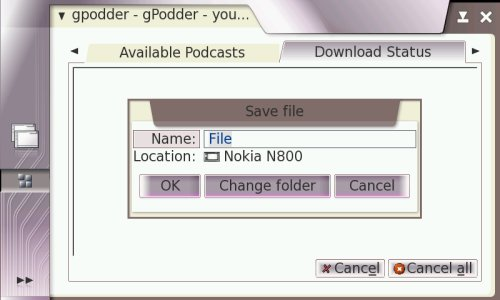

Using Python in maemo
Copyright © 2006-2007 INdT - Instituto Nokia de Tecnologia
Copyright © 2007 Nokia Corporation
Author: Daniel d'Andrada T. de Carvalho <daniel.[last name] at indt.org.br>
Introduction
This document explains how to develop applications for the maemo platform using the Python
programming language. To use the document, you must have a basic knowledge of
Python and PyGTK
(advanced knowledge is not required, but you must be able to write simple GTK programs in
Python).
Prerequisites
Before you start to write your own Python applications for maemo, perform the following tasks:
-
Learn the basics of the maemo platform
For more information, see the Overview of the Maemo Platform section in Maemo 3.0 Tutorial
1.
-
Set up the maemo development environment
The maemo development environment is where you run your maemo applications. For more
information, see Setting Up and Testing Development Environment section in Maemo 3.0
Tutorial1. The tutorial assumes
that you are developing from Scratchbox instead of directly using a maemo device (such as
a Nokia 770).
Python limitations in maemo
As handheld devices have limited resources (when compared to desktop or notebook computers),
several modules have been removed from maemo's Python in order to reduce its footprint.
The following modules have been removed:
test, ctypes/test, sqlite3/test, email/test, _ctypes_test.so, _testcapi.so, linuxaudiodev.so,
ossaudiodev.so, audioop.so, lib-tk, bsddb, idlelib.
The following modules have been removed but are supplied by other modules:
pyexpat.so, xmldom, xmlsax, xmlparsers.
The following modules are deprecated:
dbhash, curses, posixfile, getpass, macpath, macurl2path, os2emxpath, nturl2path, pty, pyclbr,
rexec, rlcompleter, statvfs, stringold, telnetlib, this, toaiff, tty, user, xdrlib, aifc,
audiodev, sunaudio and sunau.
The following modules are only available in the SDK:
distutils, pdb, pydoc, BaseHTTPServer, SimpleHTTPServer, SimpleXMLRPCServer, CGIHTTPServer,
cgi, cgitb, DocXMLRPCServeri, robotparser, smtpd, compile, encodings.cp*, encodings.mac*,
doctest, unittest, config, symtable, tabnanny, timeit, trace and hotshot.
The import command will import .pyo files even if the interpreted is
called without the -O or -OO option. This is a difference from the standard Python
behavior.
Installing Python
Example of a "Hello World!" application
To get started with Python, use the following sections to write a simple GTK+ application which
creates and shows a window with a "Hello World!" text.
Plain PyGTK
Create a hello_world_1.py file with the following content.
#!/usr/bin/env python2.5
import gtk
window = gtk.Window(gtk.WINDOW_TOPLEVEL)
label = gtk.Label("Hello World!")
window.add(label)
label.show()
window.show()
gtk.main()
In the Scratchbox console, first make the file executable by running the
chmode +x ./hello_world_1.py command, and then run the file with the
run-standalone.sh ./hello_world_1.py command. Figure 1 illustrates the results of
the run command:
Figure 1. Plain PyGTK "Hello World!" application
You can see that the plain PyGTK code already "works" on maemo. However, do not use plain
PyGTK code or rely on the assumption that any PyGTK code "works" on maemo. In this tiny
example program, the obvious sign of misfit in the maemo environment is that its borders
(skin graphic area) are broken (look at the top corners).
The reason for using the run-standalone.sh command to execute
the application is that it adds the Hildon theming. Figure 2 illustrates how the application
looks if run without the run-standalone.sh command:

Figure 2. Application without the Hildon theme
Note
The run-standalone.sh command is only available if you run
applications from the Scratchbox console.
HildonWindow Class
The HildonWindow class overloads the GtkWindow class, providing the Hildon
theme (look and feel) for top level windows. In order to use the facilities provided by the
Hildon framework (and to integrate cleanly in it), the application must use a HildonWindow
instead of a GtkWindow. With a HildonWindow class the application has,
for example, access to Hildon menus and toolbars.
The required code change is simple: replace the GtkWindow with HildonWindow
and import the hildon module. The following example illustrates the required
changes (also downloadable here):
#!/usr/bin/env python2.5
import gtk
import hildon
window = hildon.Window()
window.connect("destroy", gtk.main_quit)
label = gtk.Label("Hello World!")
window.add(label)
label.show()
window.show()
gtk.main()
Figure 3. Hildon-compliant "Hello World!" application
Note how the borders are now drawn in the right way, since the program is using the
HildonWindow class.
HildonProgram Class
The HildonProgram class is a programmer commodity used to apply program-wide settings
to all Hildon windows used by the application (for example, this allows you to have a common
menu and toolbar on all windows). In addition, HildonProgram also manages other
program-wide issues, such as hibernating.
The example "Hello World" application has no use for a HildonProgram object, but it
is added to the following example (also downloadable here),
simply to illustrate how a regular Hildon application is structured.
#!/usr/bin/env python2.5
import gtk
import hildon
class HelloWorldApp(hildon.Program):
def __init__(self):
hildon.Program.__init__(self)
self.window = hildon.Window()
self.window.connect("destroy", gtk.main_quit)
self.add_window(self.window)
label = gtk.Label("Hello World!")
self.window.add(label)
label.show()
def run(self):
self.window.show_all()
gtk.main()
app = HelloWorldApp()
app.run()
When running the application, the result is the same as shown in Figure 3.
Porting existing applications
This section describes the issues involved in porting an existing PyGTK application to maemo.
The porting of a real application is illustrated with step-by-step instructions.
The example application is gPodder (version 0.8). It was chosen because it is reasonably
simple, has a small, uncluttered, interface and contains most of the important issues involved
in porting PyGTK applications to maemo.
A great part of the porting effort is spent making an application use and obey the Hildon UI style
(such as making use of hardware keys and Hildon-specific widgets). As a result, make sure that
you are familiar with the Hildon UI style before you start porting. For more information, see
Hildon User Interface Style Guide2.
Installing and running gPodder in maemo
To install and run gPodder:
-
Download the source package here or directly from the project's page,
http://gpodder.berlios.de/.
-
Explode the gpodder-0.8.0.tar.gz file. The gpodder-0.8.0 directory
will be created.
-
In the gpodder-0.8.0 directory, use the Scratchbox console to run
the following commands: python2.5 setup.py install and
run-standalone.sh gpodder
The Scratchbox console can display some GLib warnings, but you can ignore them. Figure 4
illustrates the screen you see after running the commands:

Figure 4. gPodder running on maemo without any modifications
This means that gPodder 0.8 works on maemo without any modifications. However, it is not a maemo
application yet, and the steps in the following sections are required to make it fit cleanly in
the Maemo environment.
gPodder code overview
This section gives a brief overview of gPodder's source code. The purpose of the overview is to
make it easier to understand the code changes implemented in the following sections.
Most of the code changes are made in the
gpodder-0.8.0/src/gpodder/gpodder.py file. It contains the following
classes:
class Gpodder(SimpleGladeApp)
class Gpodderchannel(SimpleGladeApp)
class Gpodderproperties(SimpleGladeApp)
class Gpodderepisode(SimpleGladeApp)
class Gpoddersync(SimpleGladeApp)
class Gpodderopmllister(SimpleGladeApp)
Open the gpodder-0.8.0/data/gpodder.glade file using the
Glade User Interface Designer
(another option is Gazpacho). You can see that there is one class for each
GtkWindow defined in it, as shown in Figure 5:
Figure 5. Windows defined in gPodder's glade file
In addition to loading the window description from gpodder.glade,
the SimpleGladeApp class also makes all window elements directly
accessible from self, ignoring the element's hierarchy. Figure 6
illustrates part of the element's hierarchy for the gPodder window, and how to access the
elements from inside a Gpodder method.
Changing to HildonProgram and HildonWindow
The first code change in the porting exercise is to make gPodder use HildonProgram
and HildonWindow classes instead of the GtkWindow class.
Start by modifying the gpodder.py file (in the gpodder-0.8.0/src/gpodder
directory). Since you want to use Hildon elements, you have to import its module. The following
example illustrates the import:
61 |from libipodsync import gPodder_iPodSync
62 |from libipodsync import ipod_supported
63 |
++ |import hildon
++ |
64 |# for isDebugging:
65 |import libgpodder
Second, add a HildonProgram
(self.app) and a HildonWindow
(self.window). The following example illustrates the added
objects:
115 | if libgpodder.isDebugging():
116 | print "A new %s has been created" % self.__class__.__name__
117 |
++ | self.app = hildon.Program()
++ |
++ | self.window = hildon.Window()
++ | self.window.set_title(self.gPodder.get_title())
++ | self.app.add_window(self.window)
++ |
++ | self.vMain.reparent(self.window)
++ | self.gPodder.destroy()
++ |
++ | self.window.show_all()
++ |
118 | #self.gPodder.set_title( self.gPodder.get_title())
119 | #self.statusLabel.set_text( "Welcome to gPodder! Suggestions? Mail to: thp@perli.net")
120 | # set up the rendering of the comboAvailable combobox
The gPodder class (self) has its
close_gpodder method connected to the
destroy signal from the original
gPodder Gtk window. This means that you have to remove the
connection from gPodder and put it in the new
Hildonwindow (self.window).
To remove the signal connection from the original gPodder Gtk
window, open the gpodder.glade file (in the
gpodder-0.8.0/data directory) and remove the connection, as shown in
Figure 7.
Figure 7. destroy signal for gPodder window
The following example illustrates how you connect
Gpodder.close_gpodder to the new
HildonProgram (self.app):
119 |
120 | self.window = hildon.Window()
121 | self.window.set_title(self.gPodder.get_title())
++ | self.window.connect("destroy", self.close_gpodder)
122 | self.app.add_window(self.window)
123 |
124 | self.vMain.reparent(self.window)
The change from GtkWindow to
HildonProgram/HildonWindow is now
complete. Figure 8 illustrates the results if you run gPodder again.
Note
Don't forget to run python2.5 setup.py install before lauching gPodder again,
otherwise you will still be using the old, unmodified, version.
Figure 8. gPodder using HildonProgram and HildonWindow
Note that the window fits in the screen without any broken borders, just as the "Hello World"
application did.
Changing to HildonWindow menu bar
This section describes how you make gPodder use Hildon's title area as its menu bar, instead of
using its own GTK+ menu (a GTKMenuBar object).
In the gpodder.glade file, you can see that the
gPodder window has a menu bar (a
GTKMenuBar object) called mainMenu.
You must move all its children (menuPodcasts,
menuChannels and menuHelp) to the
HildonWindow's menu and then destroy the empty
mainMenu menu.
To achieve this, add the following lines to the gpodder.py file:
125 | self.vMain.reparent(self.window)
126 | self.gPodder.destroy()
127 |
++ | menu = gtk.Menu()
++ | for child in self.mainMenu.get_children():
++ | child.reparent(menu)
++ | self.window.set_menu(menu)
++ |
++ | self.mainMenu.destroy()
++ |
128 | self.window.show_all()
129 |
130 | #self.gPodder.set_title( self.gPodder.get_title())
Figure 9 illustrates the resulting menu:
Figure 9. gPodder using HildonWindow's menu bar
Using Hildon widgets
Hildon has a set of widgets for common operations, such as a color selection dialog, file
chooser dialog and a time picker. Most of them provide the same functionality (or extension) as
the existing GTK+ widgets. For example, HildonFileChooserDialog
has the same purpose as GtkFileChooserDialog.
Replace the GTK+ widgets with the Hildon ones whenever possible, since the Hildon widgets were
designed to obey maemo's restrictions and peculiarities.
gPodder uses a GTK+ file chooser dialog when users export their channel lists. It doesn't fit
well into maemo's environment as you can see from Figure 10.
Figure 10. gPodder using GTK's file chooser dialog
Make it use a HildonFileChooserDialog instead. The following example illustrates the
code changes needed in gpodder-0.8.0/src/gpodder/gpodder.py:
579 | if len( self.channels) == 0:
580 | self.showMessage( _("Your channel list is empty. Nothing to export."))
581 | return
582 -- | dlg = gtk.FileChooserDialog( title=_("Export to OPML"), parent = None,[...]
583 -- | dlg.add_button( gtk.STOCK_CANCEL, gtk.RESPONSE_CANCEL)
584 -- | dlg.add_button( gtk.STOCK_SAVE, gtk.RESPONSE_OK)
++ | dlg = hildon.FileChooserDialog(self.window, gtk.FILE_CHOOSER_ACTION_SAVE);
585 | response = dlg.run()
586 | if response == gtk.RESPONSE_OK:
587 | foutname = dlg.get_filename()
Figure 11 illustrates the results when you select Menu > Channels > Export List:

Figure 11. gPodder using Hildon's file chooser dialog
Adjusting the Glade interface to fit into a small screen
The following change to the interface layout is necessary to make it fit into the relatively
small maemo screen:
Using hardware keys
Maemo applications must use the available hardware keys to improve their usability. Most
applications don't have use for of them, of course, but try nonetheless to use those
that make sense in your program, giving it the usability expected from a proper maemo
application.
The Full screen hardware key is particularly useful, since the screen size is one of
the key issues in maemo applications, especially in desktop applications that are being
ported to maemo (such as gPodder).
To implement the full screen functionality, you have to monitor two more window signals:
- Key presses, to know when the Full screen key is pressed.
- Window state changes, to know whether the window is already in full screen mode.
To make gPodder respond correctly when the user presses the Full screen hardware key
you have to make the following changes to gpodder-0.8.0/src/gpodder/gpodder.py:
1. Connect to the signals and set a variable to monitor whether the application is
in full screen mode.
120 | self.window = hildon.Window()
121 | self.window.set_title(self.gPodder.get_title())
122 | self.window.connect("destroy", self.close_gpodder)
++ | self.window.connect("key-press-event", self.on_key_press)
++ | self.window.connect("window-state-event", self.on_window_state_change)
++ | self.window_in_fullscreen = False #The window isn't in full screen mode initially.
123 | self.app.add_window(self.window)
124 |
125 | self.vMain.reparent(self.window)
2. Implement the callback to monitor window state changes.
575 | self.showMessage( _("Could not delete channel.\nProbably no channel is selected."))
576 | #-- Gpodder.on_itemRemoveChannel_activate }
577 |
++ | def on_window_state_change(self, widget, event, *args):
++ | if event.new_window_state & gtk.gdk.WINDOW_STATE_FULLSCREEN:
++ | self.window_in_fullscreen = True
++ | else:
++ | self.window_in_fullscreen = False
++ |
578 | #-- Gpodder.on_itemExportChannels_activate {
579 | def on_itemExportChannels_activate(self, widget, *args):
580 | if libgpodder.isDebugging():
3. Implement the callback to monitor key presses.
581 | else:
582 | self.window_in_fullscreen = False
583 |
++ | def on_key_press(self, widget, event, *args):
++ | if event.keyval == gtk.keysyms.F6:
++ | # The "Full screen" hardware key has been pressed
++ | if self.window_in_fullscreen:
++ | self.window.unfullscreen ()
++ | else:
++ | self.window.fullscreen ()
++ |
584 | #-- Gpodder.on_itemExportChannels_activate {
585 | def on_itemExportChannels_activate(self, widget, *args):
586 | if libgpodder.isDebugging():
Note
The Full screen hardware key maps to the F6 key on the SDK.
Figure 13 illustrates gPodder in full screen mode.
Figure 13. gPodder in full screen mode
Introduction to LibOSSO
LibOSSO is the basic library containing required and helpful functions for maemo applications.
One of LibOSSO's main features is RPC (Remote Procedure Calls) services (as it "wraps" D-Bus
3). In addition, LibOSSO provides access
to low-level hardware functions, such as turning on (or keeping on) the display, autosaving,
state saving and system time.
All maemo-compliant applications must use LibOSSO to respond coherently to system changes and
signals, such as the battery low, pre-shutdown and state saving signals.
This section describes how remote procedure calls are implemented using LibOSSO. The example is
divided in two different sample applications: osso_test_sender.py
and osso_test_receiver.py.
The sender sample application sends an RPC message when a button is clicked. D-Bus interprets
the message and sends the RPC to the receiver sample application, which displays a system
notification stating that it has received the RPC.
Sender sample application
The sender is simply a button occupying the whole window. When you click it, an RPC is sent to
the receiver sample application.
Create a osso_test_sender.py file with the following content.
#!/usr/bin/python2.5
import osso
import hildon
import gtk
def send_rpc(widget, osso_c):
osso_rpc = osso.Rpc(osso_c)
osso_rpc.rpc_run("spam.eggs.osso_test_receiver",
"/spam/eggs/osso_test_receiver",
"spam.eggs.osso_test_receiver", "do_something")
print "RPC sent"
osso_c = osso.Context("osso_test_sender", "0.0.1", False)
window = hildon.Window()
window.connect("destroy", gtk.main_quit)
send_button = gtk.Button("Send RPC")
window.add(send_button)
send_button.connect("clicked", send_rpc, osso_c)
window.show_all()
gtk.main()
Receiver sample application
The receiver is an application that has no GUI (no window), it runs unseen in the background
waiting for an RPC. When it receives one, it uses LibOSSO to display an information banner
notifying the user that an RPC has been received.
Create a osso_test_receiver.py file with the following content.
#!/usr/bin/python2.5
import osso
import gtk
def callback_func(interface, method, arguments, user_data):
print "RPC received"
osso_c = user_data
osso_sysnote = osso.SystemNote(osso_c)
osso_sysnote.system_note_infoprint("osso_test_receiver: Received an RPC to %s." % method)
osso_c = osso.Context("osso_test_receiver", "0.0.1", False)
print "osso_test_receiver started"
osso_rpc = osso.Rpc(osso_c)
osso_rpc.set_rpc_callback("spam.eggs.osso_test_receiver",
"/spam/eggs/osso_test_receiver",
"spam.eggs.osso_test_receiver", callback_func, osso_c)
gtk.main()
The receiver also must register itself as a D-Bus service. Create a
osso_test_receiver.service file with the following content.
[D-BUS Service]
Name=spam.eggs.osso_test_receiver
Exec={SOME_DIRECTORY_HIERARCHY}/osso_test_receiver.py
Replace {SOME_DIRECTORY_HIERARCHY} with the directory where
osso_test_receiver.py is located.
Add the osso_test_receiver.service file to
/usr/share/dbus-1/services.
Running applications
First make sure that D-Bus recognises the new D-Bus service (
spam.eggs.osso_test_receiver). To do this, restart your maemo
environment by using the following command on the Scratchbox console:
[sbox-TARGET_NAME: ~] > af-sb-init.sh restart
Then run osso_test_sender.py with the following command (assuming
that it is in your home directory):
[sbox-TARGET_NAME: ~] > run-standalone.sh ./osso_test_sender.py
Figure 12 illustrates what now happens every time you click the Send RPC button.

Figure 12. LibOSSO sample application
Note that you do not have to manually run osso_test_receiver.py,
as D-Bus does it automatically. Due to its extreme simplicity, the once instantiated
osso_test_receiver.py continues running in background until you
manually kill it from the Scratchbox console.
Distributing the Python applications
To distribute applications, you must put it in a neat single file (such as a regular Debian
package) so that the application installer can recognise and install it, put all files to their
correct locations and create an entry for the application in the menu.
Requirements
As maemo devices are not delivered with Python by default, the maemo Python runtime package must
also be installed. You can download it from http://www.maemo.org.
Distributing a "Hello PyMaemo!" application
This section describes the process of creating a maemo package by showing how to package a
simple "hello world" style application. Create a hello-pymaemo
file (without the ".py" suffix) with the following content.
#!/usr/bin/env python2.5
import gtk
import hildon
import osso
osso_c = osso.Context("hello_pymaemo", "1.0.0", False)
window = hildon.Window ()
window.set_title ("Hello maemo!")
window.connect("destroy", gtk.main_quit)
button = gtk.Button ("Hello Python for Maemo!")
window.add (button)
window.show_all ()
gtk.main ()
Make the file executable by running the chmod +x hello-pymaemo
command. This ensures that you can run the script in the same way as a regular binary
application.
Desktop integration
You must have an icon for the application. The icon is shown in the menu entry and in the task
navigator bar. The icon must be a 26x26 pixels PNG image with a transparent background, such as
the
example icon shown in Figure 13:
Figure 13. Hello PyMaemo icon
Name the icon hello_icon_26x26.png.
The menu entry is a .desktop file with the following content for
the application:
[Desktop Entry]
Version=1.0.0
Encoding=UTF-8
Name=Hello PyMaemo!
Exec=/usr/bin/hello-pymaemo
Icon=hello_icon_26x26
Type=Application
X-Osso-Service=hello_pymaemo
X-Osso-Type=application/x-executable
Note
Be very careful when writing the desktop file, since the system is very sensitive to
typographical errors in it and a faulty desktop file simply fails to show its menu entry
without yielding any errors.
| Field name |
Description |
| Version |
Application version |
| Encoding |
Character encoding. Must always be UTF8. |
| Name |
Application's name |
| Exec |
File to be executed when the application is called |
| Icon |
Application's icon. Only the name of the file without its suffix
(.png).
|
| Type |
"Application"since it is an entry for an application
|
| X-Osso-Service |
Name of the osso service that calls this application. For more information, see the
paragraphs below the table.
|
| X-Osso-Type |
Usually "application/x-executable" |
Table 1. .desktop file fields
As you can see in the desktop file, the application also needs an osso (D-Bus) service.
Otherwise, it does not appear in the task navigation bar. For the service, create a
hello_pymaemo.service file with the following content.
[D-BUS Service]
Name=com.nokia.hello_pymaemo
Exec=/usr/bin/hello-pymaemo
Note that since "-" is not a valid character in a service name.,
hello_pymaemo is used instead of
hello-pymaemo.
Copying files to their locations
Use Python Distribution Utilities ("Distutils") to copy the files to their proper locations.
Create a setup.py file with the following content.
from distutils.core import setup
setup(name='hello-pymaemo',
version='1.0.0',
scripts=['hello-pymaemo'],
data_files = [
('share/pixmaps', ['hello_icon_26x26.png']),
('share/applications/hildon', ['hello-pymaemo.desktop']),
('share/dbus-1/services', ['hello_pymaemo.service']),
]
)
In the Scratchbox console, issue the python2.5 setup.py install
command to achieve the following result:
-
hello-pymaemo is copied to /usr/bin
-
hello_icon_26x26.png is
copied to /usr/share/pixmaps
-
hello-pymaemo.desktop is
copied to /usr/share/applications/hildon
-
hello_pymaemo.service is
copied to /usr/share/dbus-1/services
After you have run the command, the application is actually installed in your system (in
Scratchbox, you have to ru the af-sb-init.sh restart command
before calling your application from the menu). You can access it from the Extras menu.
The problem with this approach is that if you want to remove the application, you have to
manually delete every file from its corresponding directory, which is not practical. It is also
not practical to distribute an application this way, since every user has to manually run the
command (or a script that does it).
Instead, you can let the Application Installer take care of all these issues. To do that, you
have to group all the files in a Debian package.
For more information about Python Distribution Utilities, see Distributing Python
Modules4. To get a basic knowledge of
Distutils, reading Chapters 1 and 2 is strongly recommended.
Creating a Debian package
When creating a Debian package, the first step is to put all the files (the hello-pymaemo script,
and the png, desktop and service files) in an empty directory called
hello-pymaemo-1.0.0. The directory name must follow the
<package-name>-<app-version> convention. This means
that the package that you are creating for the hello world application is called
hello-pymaemo.
As Debian packages use makefiles (Makefile) instead of Python
Distutils (setup.py), you have to write a
Makefile to act as an interface between the Debian package system
and the setup.py. The file is very simple; it merely issues
commands to setup.py according to make's target. If you have no
knowledge of make files, see Chapters 1 and 2 in GNU Make
Manual5.
Create a Makefile file with the following content.
all:
python2.5 setup.py build
clean:
python2.5 setup.py clean --all
install:
python2.5 setup.py install --root $(DESTDIR)
In Scratchbox console (inside the hello-pymaemo-1.0.0 directory),
enter the following command:
[sbox-TARGET_NAME: ~/hello-pymaemo-1.0.0] > dh_make -e your.email@somewhere.com
The system displays the following output:
Type of package: single binary, multiple binary, library, or kernel module? [s/m/l/k] s
Maintainer name : unknown
Email-Address : your.email@somewhere.com
Date : Thu, 18 May 2006 13:58:04 -0300
Package Name : hello-pymaemo
Version : 1.0.0
Type of Package : Single
Hit <enter> to confirm:
Done. Please edit the files in the debian/ subdirectory now.
You should also check that the hello-pymaemo Makefiles install into $DESTDIR and not in / .
Choose "single binary" as a package type. In case the "--root $(DESTDIR)"
part of the makefile is not clear to you, the last sentece in the output is meant to
clarify the situation.
The dh_make command creates a debian
subdirectory containing multiple configuration text files, most of which are templates that can
be removed, since the application does not use them. In addition, the command makes a copy of
the original directory, calling it hello-pymaemo-1.0.0.orig.
Table 2 lists the files needed in hello-pymaemo-1.0.0/debian
(others can be removed):
Table 2. Needed files for the example application package
| File in ./debian |
Description |
| changelog |
Application's change log |
| compat |
Debian helper compatibily version. Leave it as it is. |
| control |
Describes the packages to be made. For more information, see the paragraphs
below the table.
|
| copyright |
Copyright text. Fill in the blanks. |
| rules |
A makefile containing the rules to build all kinds of packages (such as source and binary).
For more information, see the paragraphs below the table.
|
The key files in ./debian are control
and rules. They contain a generic template showing what they must
look like. In control, you must simply fill in the blanks and, in
rules, you essentially need to remove unwanted and unnecessary
code.
The following example illustrates what the control file for the
example application must contain:
Source: hello-pymaemo
Section: user/other
Priority: optional
Maintainer: My Name <your.email@somewhere.com>
Build-Depends: debhelper (>= 4.0.0), python2.5-dev
Standards-Version: 3.6.0
Package: hello-pymaemo
Architecture: all
Depends: python2.5, python2.5-hildon, python2.5-gtk2
Description: A simple "Hello Python for Maemo!"
A very simple application consisting of a single button, containing the
text "Hello Python for Maemo!".
XB-Maemo-Icon-26:
iVBORw0KGgoAAAANSUhEUgAAABoAAAAaCAYAAACpSkzOAAAABmJLR0QA/wD/AP+g
vaeTAAAACXBIWXMAAAsTAAALEwEAmpwYAAAAB3RJTUUH1gURDQoYya0JlwAAAU9J
REFUSMftlL1KA0EUhb/NZl/ggnHQxsJUxt5CUucVJCCkDfgyKdIGG5/A0s5HEBtJ
EdDAQGBgmw0YJmMzgXXYza5CtNkDW9zZw5z7c+ZCgwb/Ai3i9sVl/Bq8RIs4LRK1
gJDsKvJyNXmJMuYTsMoY1zpgozaABdYArQNPZQ1kfyGU7SpqVwxzAMwABWhgpIwp
4vWBB+AUWAI3ypjnfEXtPU4bLKx9vErTeCeiRSYF+fTn1j5dp2myE9EiU+DSi3wX
ymeqRQAmZ3EcA5E/fgO6BULT8zhOcrwXoJdrXRa2Lgps2y2odAUcBUIXQdz78YyC
SldAp8b7+bXrIv91qjZBietqCc2DjbAt4b2WxJkyZljVujlwp0U0cPxuLcAIuC+4
dKxFlsDJarvdAGP/b6hFnDImYs+uG3hbO2AB3Jbsur63tQM+fFx3bzZocEB8AdV2
gJBZgKTwAAAAAElFTkSuQmCC
The XB-Maemo-Icon-26 field contains the application icon file (in
this case, hello_icon_26x26.png) encoded in base64. This is the
icon that is shown in the Application Installer, next to the package name. To do this encoding
in Linux, you can use either uuencode or
openssl (there can be more suitable applications). Maemos's Scratchbox rootstrap is
delivered with uuencode. Do not forget to put a white space at the
beginning of each line containing the icon-encoded text. The white space serves as indentation.
The same rule stands for the long package description ( A very simple
application[...]).
The Application Installer only shows packages in the user section.
Thus, your Section: field in the control
file must has the Section: user/<SUBSECTION> syntax,
where <SUBSECTION> is arbitrary.
The following example illustrates the rules file for the example
application:
#!/usr/bin/make -f
# -*- makefile -*-
# Sample debian/rules that uses debhelper.
# GNU copyright 1997 to 1999 by Joey Hess.
# Uncomment this to turn on verbose mode.
#export DH_VERBOSE=1
ifeq (,$(findstring nostrip,$(DEB_BUILD_OPTIONS)))
INSTALL_PROGRAM += -s
endif
configure: configure-stamp
configure-stamp:
dh_testdir
# Add here commands to configure the package.
touch configure-stamp
build: build-stamp
build-stamp: configure-stamp
dh_testdir
# Add here commands to compile the package.
$(MAKE)
touch build-stamp
clean: dh_testdir
dh_testroot
rm -f build-stamp configure-stamp
# Add here commands to clean up after the build process.
-$(MAKE) clean
dh_clean
install: build
dh_testdir
dh_testroot
dh_clean -k
dh_installdirs
# Add here commands to install the package into debian/hello-pymaemo.
$(MAKE) install DESTDIR=$(CURDIR)/debian/hello-pymaemo
# Build architecture-independent files here.
binary-indep: build install
dh_testdir
dh_testroot
dh_installchangelogs
dh_fixperms
dh_installdeb
dh_gencontrol
dh_md5sums
dh_builddeb
binary-arch: build install
binary: binary-indep binary-arch
.PHONY: build clean binary-indep binary-arch binary install configure
The main point is that the binary-arch target was emptied and the
binary-indep filled, since the application being 100% Python means
that it is 100% architecture-independent.
All the preliminary steps are now done, and you can build the Debian package itself with the
following command:
[sbox-TARGET_NAME: ~/hello-pymaemo-1.0.0] > dpkg-buildpackage -rfakeroot
The system displays some output, including a couple of warnings near the end of it
(about XB-Maemo-Icon-26) but that is normal. The parent directory now has a
hello-pymaemo_1.0.0-1_all.deb file - your Debian package. This is the file that is
distributed to maemo devices and installed using the Application Installer.
For more information about making Debian packages, see Debian New Maintainers'
Guide6.
References
{kind=link}